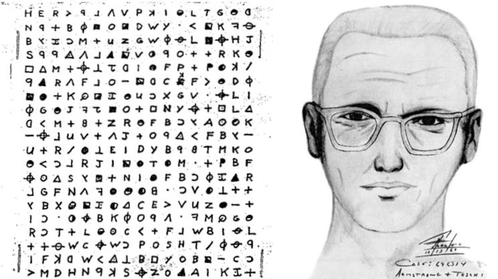
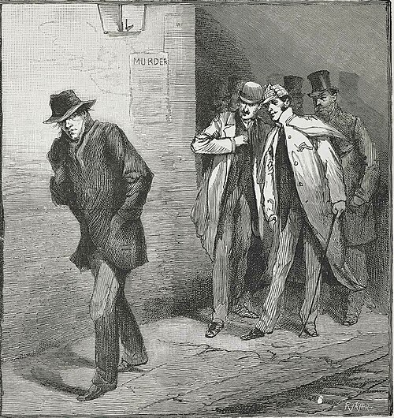
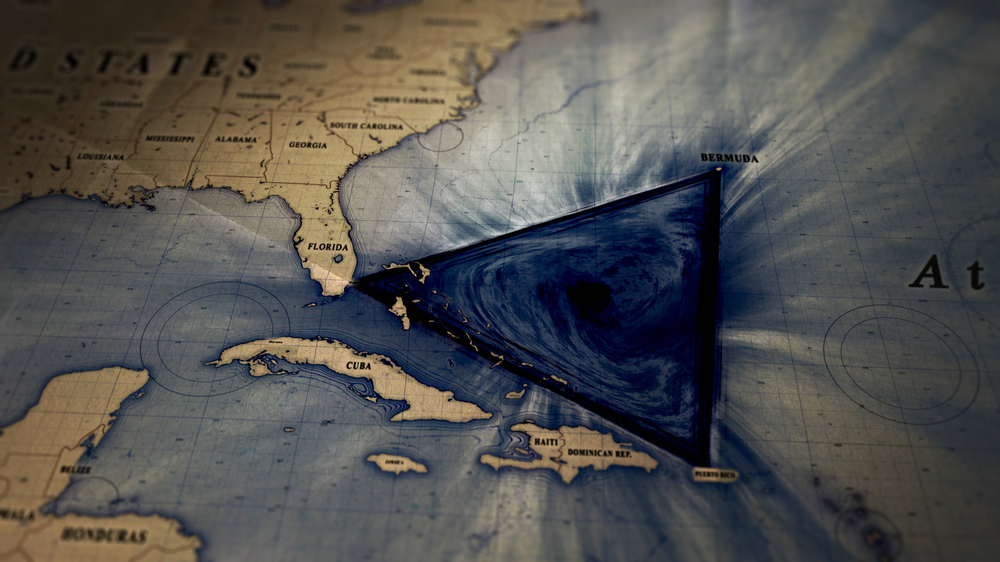
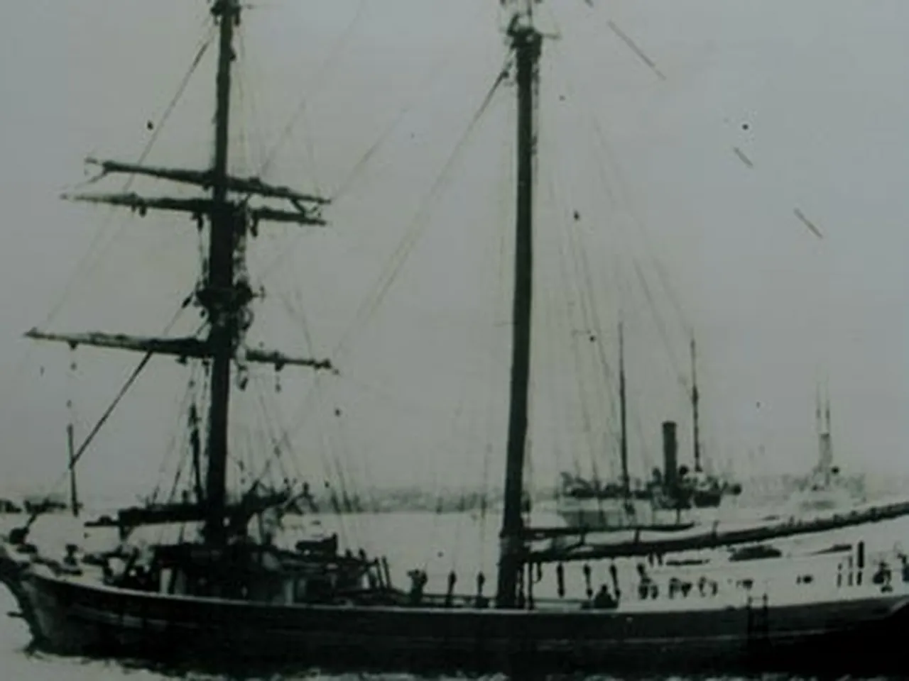

Case files of reported events that remain unsolved, or unexplained. They can include mysterious disappearances, unsolved crimes, strange incidents, and other cases that continue to raise questions and theories.

Case: Zodiac Killer
Location: Northern California, United States
Time Period: 1968–1969
Status: Unsolved
The Zodiac Killer was an unidentified person who committed a series of murders in Northern California during the late 1960s. The killer became known as the “Zodiac” after sending letters and cryptograms to newspapers, claiming responsibility for the attacks. Some of the letters included messages that challenged police and the public to identify him.
The Zodiac Killer was linked to at least five murders, although he claimed to have killed more people. Several suspects were investigated over the years, but no one was officially identified or convicted as the Zodiac Killer. The case remains one of the most well-known unsolved criminal cases in the United States.
Source: Wikipedia, “Zodiac Killer”

Case: Jack the Ripper
Location: Whitechapel, London, England
Time Period: 1888
Status: Unsolved
Jack the Ripper was the name given to an unidentified killer who murdered women in the Whitechapel area of London in 1888. The murders were particularly disturbing because of the injuries inflicted on the victims. The killer's identity was never confirmed, and the case received widespread attention from newspapers and the public.
At least five murders are commonly considered to be connected to Jack the Ripper. These victims are often referred to as the “canonical five.” Police investigated many suspects, but no one was officially identified as the killer. Over the years, many theories and suspects have been proposed, but the case remains unsolved.
Source: Wikipedia, “Jack the Ripper”

Case: The Bermuda Triangle
Location: Western North Atlantic Ocean
Time Period: 20th century–present
Status: Unexplained
The Bermuda Triangle is a region of the Atlantic Ocean where a number of ships and aircraft have reportedly disappeared under mysterious circumstances. It is generally described as an area between Florida, Bermuda, and Puerto Rico. Stories about the Bermuda Triangle became especially popular during the 20th century as books, magazines, and television programs described strange disappearances in the area.One of the most famous cases c onnected to the Bermuda Triangle is Flight 19, a group of five U.S. Navy aircraft that disappeared during a training flight in 1945. A rescue aircraft sent to search for them also disappeared. The exact cause of the disappearances has been debated, although explanations include bad weather, navigation problems, and human error. Despite its reputation, there is no established evidence that disappearances happen more frequently in the Bermuda Triangle than in other heavily traveled areas of the ocean.
Source: Wikipedia, “Bermuda Triangle”

Case: The Mary Celeste
Location: Atlantic Ocean
Time Period: 1872
Status: Unsolved
The Mary Celeste was an American merchant ship that was discovered abandoned in the Atlantic Ocean on December 4, 1872. The ship was found sailing normally, but there was no one aboard. The crew, along with the captain's wife and daughter, had disappeared. The ship was found with most of its cargo and personal belongings still onboard. The lifeboat was missing, suggesting that the people aboard may have left the ship. However, no one knows exactly why they abandoned it or what happened to them. Many theories have been suggested, including bad weather, problems with the ship's cargo, or fear that the ship was sinking. However, none of these theories has been proven.
Source: Wikipedia, “Mary Celeste”